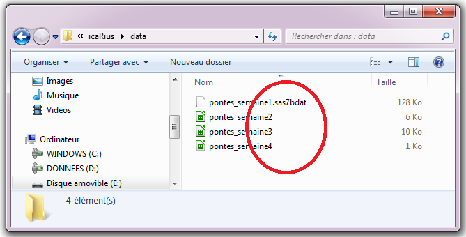

Chapitre 2 - des poules et des oeufs
Vous venez de rencontrer la fermière du village Kokoro, désespérée d’avoir perdu le livre de compte où, chaque jour, elle note consciencieusement le nombre de pontes.
Aidons IcaRius à reconstituer le livre de compte. Ce dernier n’est pas tout à fait perdu : il en reste une copie, éclatée dans plusieurs fragments par le redoutable sorcier SaSSoS ! Il y a ainsi un document par semaine de pontes, et il faut lire les 4 semaines de pontes pour recomposer le livre de compte.
Pour le corser le tout, chaque fragment a été ensorcelé et semble indéchiffrable… Ils sont en effet chacun dans d’étranges formats : SAS, Excel, Calc et Csv…
Aie aie aie.
Un Sasseur sait bien sasser… sur R ?
Commençons par le format SAS - qui rappellera peut-être quelques souvenirs aux aventuriers les plus aguerris. Nous allons donc apprendre, en R, à lire un fichier SAS.
Le contenu de ce fichier - que seul le terrible SaSSoS est normalement capable de lire, est le suivant :

Pour charger un fichier, nous allons utiliser un sortilège prévu à cet effet dans R. Dans le monde des Runes, un sortilège est identifié par son nom suivi de parenthèses :nomsortilege(). A l’intérieur des parenthèses, sont précisés les ingrédients utiles à la confection du sortilège. Pas d’inquiétude, une aide intégrée dans R permet de connaître la liste des ingrédients que l’on peut renseigner pour chaque sortilège. Si plusieurs ingrédients sont nécessaires, ces derniers sont séparés par une virgule:
Pour lire un fichier SAS, nous allons utiliser le sortilège import() qui permet, comme son nom l’indique, d’importer (import) un fichier dans R. Pour utiliser import(), il y a un ingrédient à préciser : l’emplacement du fichier à lire.
Pour s’y retrouver, autant tout de suite ranger ce que l’on est en train d’importer dans R. Pour cela, on assigne à un nouvel objet le contenu du fichier lu, en choisissant le nom de cet objet. Par exemple, appelons livre_compte_1 ce qui sera importé dans R en lisant le fichier SAS.
# J'importe le fichier et je l'assigne à l'objet livre_compte_1
livre_compte_1 <- import("chemin_du_fichier")De cette façon, en appelant l’objet livre_compte_1 dans la console R, il est aisé d’en consulter le contenu. En l’occurence :
## Poule Oeufs
## 1 Gertrude 22
## 2 Madame Mim 20
## 3 Poupoule 18
## 4 Daisy 16
## 5 Kokot 26
## 6 Chickitta 12Et voilà, c’est fini pour le premier fichier ! Ce dernier comporte deux types d’information : le nom de la poule (colonne Poule) et le nombre d’oeufs pondus (colonne Oeufs). Il y a 6 enregistrements, un par poule. Par exemple, la poule Kokot a pondu 26 oeufs - c’est d’ailleurs la meilleure pondeuse de la semaine !
Et si vous pratiquiez vous-même ? Pour cela, il faut d’abord trouver l’emplacement du fichier à lire, sur votre poste de travail par exemple. En l’occurrence, le fichier est présent sur la clé USB qui vous a été remise en début de partie. Cherchons donc l’emplacement à partir de l’explorateur dans windows.

Attention : pour spécifier le chemin d’un fichier, il va falloir jongler avec les signes cabalistiques que sont les / et les \ (ça ne s’appelle pas le langage des Runes pour rien). Contrairement à Windows où le backslash \ est utilisé pour écrire un chemin, en R il faut écrire avec un slash /. Pensez donc à modifier le chemin du répertoire lors d’un copier coller de ce dernier depuis l’explorateur. Enfin, n’oubliez pas d’ajouter à la fin le nom du fichier (pontes_semaine1) avec son extension (.sas7bdat).
Dans l’exemple ci-dessus, la bonne adresse pour notre fichier de ponte c’est donc E:/icaRius/data/pontes_semaine1.sas7bdat. Chargez vous-mêmes le fichier dans une table nommée livre_compte_1
# Charger le fichier pontes_semaine1.sas7bdat en indiquant son chemin
# et assigner le résultat à l'objet nommé livre_compte_1
# Afficher le contenu de l'objet livre_compte_1Aide 1: Utiliser la fonction import(). Veillez à indiquer le bon chemin entre parenthèses
Tremblez, messieurs les tableurs
Bon, il nous reste à ouvrir les autres fragments. Deux d’entre eux correspondent à des fichiers produits par des tableurs, comme Excel (extension .xls ou xlsx) et Calc (extension .ods). Pour les ouvrir… nous allons utiliser le même sortilège que précédemment. Et oui : le sortilège import() permet aussi d’ouvrir les documents des tableurs ! Magiques !
Comme précédemment, il nous faut spécifier le chemin du fichier, et bien veiller à renseigner son extension (ce qui figure après le “.”). Une astuce à ce sujet : dans l’explorateur Windows, l’extension d’un fichier est parfois masquée. Comment dans ce cas découvrir l’extension des fichiers pontes_semaine2, pontes_semaine3 et pontes_semaine4 dans l’exemple ci-dessous ?

Dans l’explorateur Windows, vous pouvez faire un clic-droit sur le nom du fichier que vous souhaitez consulter (par exemple pontes_semaine2) puis choisir dans la liste déroulante Propriétés. Sur l’onglet qui apparaît, une ligne donne le type de fichier et précise l’extension (ici, .xls).

Nous avons donc deux fichiers issus de tableurs :
- pontes_semaine2.xls (excel)
- pontes_semaine3.ods (calc)
Dans calc, nous pouvons les importer de la même façon.
# Je charge le fichier pontes_semaine2.xls en indiquant son chemin
livre_compte_2 <- import("E:/icaRius/data/pontes_semaine2.xls")
# Je charge le fichier pontes_semaine3.ods en indiquant son chemin
livre_compte_3 <- import("E:/icaRius/data/pontes_semaine3.ods")## Poule Oeufs
## 1 Gertrude 20
## 2 Madame Mim 18
## 3 Poupoule 20
## 4 Daisy 14
## 5 Kokot 22
## 6 Chickitta 16## Poule Oeufs
## 1 Gertrude 16
## 2 Madame Mim 24
## 3 Poupoule 18
## 4 Daisy 18
## 5 Kokot 26
## 6 Chickitta 20Tiens tiens. Chaque semaine, la poule Kokot l’emporte haut les plumes côté pontes… Serait-ce la meilleure pondeuse de la ferme ?
Une histoire de séparateur
Il nous reste un dernier fragment à ouvrir. Celui-ci se termine par l’extension .csv. Qu’est-ce donc qu’un fichier CSV ?
CSV, c’est un format de fichier où chaque enregistrement apparaît sur sa propre ligne et dont les champs sont séparés par un caractère unique appelé “séparateur”. En l’occurrence, le séparateur est une virgule ou un point-virgule : c’est d’ailleurs le sens de l’acronyme CSV, pour Comma Separated Value (Comma = virgule en anglais).
Un fichier CSV peut être produit de multiples manières, et a l’avantage d’être “interopérable”, c’est à dire qu’il peut être lu et modifier aussi bien avec un tableur comme Excel ou Calc qu’avec des logiciels statistiques comme R. Vous pouvez même créer un fichier CSV “à la main”, juste avec le Notepad dans windows par exemple.

D’après-vous, comment allons-nous charger ce fichier csv dans R ? Eh oui: toujours avec le même sortilège import() ! Vous savez désormais comment procéder : à vous de charger le fichier pontes_semaine4.csv dans la console R, en la sauvegardant dans l’objet nommé livre_compte_4
# Chargez le fichier pontes_semaine4.csv en indiquant son chemin
# Affichez le contenu de l'objet livre_compte_4
# C'est fini !Revenons à nos oeufs…
Nous avons découvert comment charger dans R des fichiers de différents formats. Les quelques exemples ici sont loin d’être exhaustifs : avec import(), vous pourriez aussi charger des fichiers au format SPSS, Stata, Matlab… et bien sûr, des fichiers de données R. Nous découvrirons plus loin dans le grimoire comment R permet de sauvegarder les objets que vous avez créés. Mais pour lors, revenons au livre de compte.
Nous avons ouverts les 4 fragments, ce qui répond aux attentes de la fermière. Il ne reste plus qu’à trouver quelle est la meilleure poule pondeuse. Celle qui, chaque semaine, sort en tête des résultats de ponte. Si vous avez bien suivi ce tutoriel, un nom de poule doit vous venir à l’esprit…
Vous avez trouvé ? Reportez le nom de la meilleure poule pondeuse dans le jeu Icarius pour reprendre la partie…
Fin du chapitre 2 >> reprenez la partie d’Icarius !!!